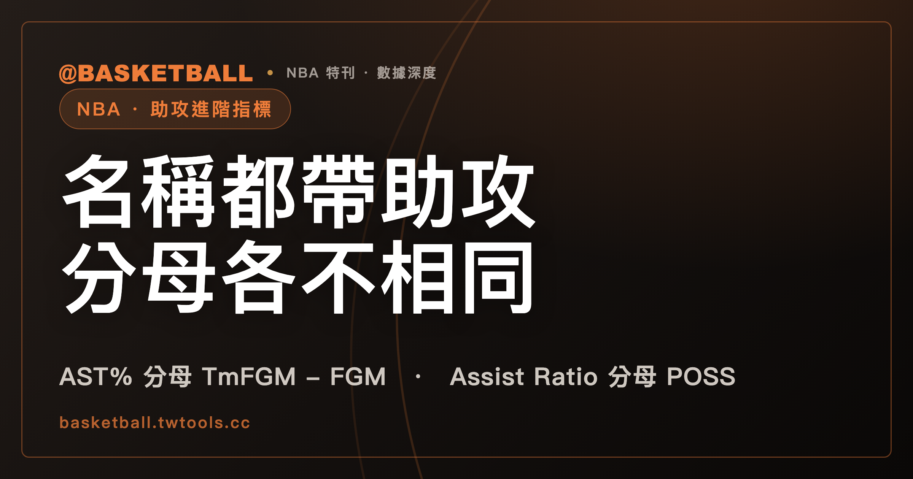

AST%、Assist Ratio、AST/TO 名稱都帶助攻，官方詞彙表拿來對比的東西各不相同
NBA 官方統計詞彙表（2026 年 9 月 25 日快照）裡，AST%、Assist Ratio、AST/TO 三個進階條目都與助攻有關：前兩個各有一條公式，分母不同，AST/TO 則只有一句定義、沒有公式。名稱相近，欄位在算的東西並不相同，讀數字之前先看條目怎麼寫。

新手村｜數據入門・助攻進階指標 AST%、Assist Ratio、AST/TO
NBA 官方統計詞彙表把 AST%、Assist Ratio、AST/TO 三個條目都標為進階（Advanced）類，名字裡都有助攻，容易讓人以為它們只是同一件事的三種寫法。
這篇文章依據的是 NBA 官方統計詞彙表（nba.com/stats/help/glossary）2026 年 9 月 25 日取得的單頁快照。這一頁沒有賽季標記，詞彙表也可能隨時改動條目，本文每一句「詞彙表寫了什麼」只對這份快照負責；之後以官方最新版為準。
本文只做一件事：把這三個條目的定義句與 Formula 欄逐項讀出來，並排比較，再用明標「假設」的數字代入。讀完之後，你應該能說出三個條目各自拿什麼來對比助攻，也能自己代入一次公式。助攻本身（AST）在詞彙表裡只是一句定義，這部分本站的技術統計表入門，在「AST、REB、STL、BLK、TOV 各記一種事件」那一節寫過；本文從它的下一步開始。
AST% 的公式分母是 TmFGM - FGM，AST% 在對比什麼？
詞彙表把 AST%（Assist Percentage）的類型標為 Advanced（進階）。定義句只有一句，意思是：球員在場上時，他助攻的隊友進球佔的百分比。原文寫的是 "The percentage of teammate field goals a player assisted on while they were on the floor"。
Formula 欄寫的是：
AST / (TmFGM - FGM)
分子是 AST，也就是那名球員自己的助攻數。分母的 TmFGM 與 FGM，詞彙表都沒有在這個條目裡解釋。詞彙表有 FGM（Field Goals Made）的條目，定義是球員或球隊投進的 field goal 數；TmFGM 這個縮寫，整份快照只在 AST% 的 Formula 欄出現一次，沒有自己的條目。
本文的讀法是：把 TmFGM 讀成球隊的進球數，把 FGM 讀成這名球員自己的進球數，兩者相減就是隊友的進球數。這個讀法與定義句裡的 "teammate field goals" 互相對得上，但它是慣用的解讀，不是詞彙表寫出來的定義。
另外，詞彙表的公式沒有乘 100。定義句說的是百分比，公式算出來的是一個小數；把小數乘 100 寫成百分比，是本文的換算，詞彙表沒有寫這一步。
Assist Ratio 的定義句寫 possessions used，公式分母卻寫 POSS
詞彙表的條目名稱是 AST Ratio（Assist Ratio），類型同樣是 Advanced。定義句寫的是：
Assist Ratio is the number of assists a player averages per 100 possessions used
意思是球員每使用 100 個 possessions 平均的助攻數。Formula 欄寫的是：
(AST * 100) / (POSS)
這條公式的分母是 POSS，不是隊友的進球數。分子的 AST 乘以 100 是公式本身寫出來的步驟，字面上與定義句的「每 100 個」相符。
這裡有一個值得停下來讀的細節：定義句寫的是 "possessions used"（使用的 possessions），詞彙表另有一個 Poss（Possessions）條目，定義首句是 "The number of possessions played by a player or team."，也就是球員或球隊參與的 possessions 數。快照裡沒有任何一句話把 POSS 與 "possessions used" 連在一起，也沒有條目解釋 "possessions used"。所以本文照原文抄公式，不替這兩個詞畫等號；想知道 POSS 在公式裡數的是哪一種回合，要靠詞彙表以外的說明。
同一份詞彙表裡，還有一個型式相近的條目：TO Ratio（Turnover Ratio），Formula 欄寫 (TO * 100) / (POSS)，分母同樣是 POSS。TOV（Turnovers）本身的定義是進攻方的球員或球隊把球輸給防守方。從這一條可以看出，POSS 是詞彙表自己會用來當分母的詞；至於 Assist Ratio 為什麼採這種寫法，詞彙表沒有說明。
AST/TO 在詞彙表裡有定義句，沒有 Formula 欄
AST/TO（Assist to Turnover Ratio）的類型也是 Advanced。詞彙表的寫法是一句話：
The number of assists for a player or team compared to the number of turnovers they have committed
意思是球員或球隊的助攻數，與他們犯下的失誤數相比。這一句寫的是「相比」（compared to），這個條目在快照裡沒有 Formula 欄，所以詞彙表沒有把「怎麼比」寫成一條算式。
這裡有一個範圍上的差別：AST% 與 Assist Ratio 的定義句只提球員，AST/TO 的定義句寫的是「球員或球隊」。
因為快照沒有公式，本文不替 AST/TO 補一條算式，也不做代入計算。要在某個網頁上使用 AST/TO，先看那個頁面自己怎麼標示算法。
三個條目並排：定義句、Formula 欄、有沒有公式
把前面三節放進同一張表，差別一眼就看得出來（詞彙表 2026 年 9 月 25 日快照）：
| 指標 | 詞彙表定義句（意譯） | Formula 欄內容 | 快照有無公式 |
|---|---|---|---|
| AST%（Assist Percentage） | 球員在場上時，他助攻的隊友進球佔的百分比 | AST / (TmFGM - FGM) |
有 |
| AST Ratio（Assist Ratio） | 球員每使用 100 個 possessions 平均的助攻數 | (AST * 100) / (POSS) |
有 |
| AST/TO（Assist to Turnover Ratio） | 球員或球隊的助攻數，與其失誤數相比 | 無 | 無，只有定義句 |
三個條目的分子或被比較的對象都是助攻，但拿來對照的另一端不同：AST% 的公式分母是 TmFGM 減 FGM，Assist Ratio 的公式分母是 POSS，AST/TO 的定義句對照的是失誤數。
照這三條的寫法看，本文的讀法是：名稱裡都有助攻，不代表三個欄位的數值可以互換著比。這是本文由三個條目的寫法推出來的讀法，詞彙表沒有寫過這句話；快照裡也沒有把這幾個指標說成互相替代，或說成傳球能力的衡量。
名稱相近的還有兩個條目，各用一句話帶過，避免混淆：
- %AST（詞彙表的條目名稱是 Percent of Team's Assists）：定義句說的是球員在場上時，他佔球隊助攻的百分比。它與 AST% 是兩個不同的條目，AST% 的定義句提的是隊友的進球。
- AST to PASS%（Assist to Pass Percentage，類型 Tracking）：Formula 欄寫
(Assists)/(Passes Made)，分母是 Passes Made；Passes Made 在詞彙表的定義是球員或球隊每場的傳球總數。
這兩個條目各有自己的定義，本文不展開。
假設同一名球員：AST 6，三個條目各怎麼讀？
下面的數字全部是假設，不是任何一名真實球員。假設某球員 AST 是 6、TmFGM 是 34、FGM 是 4，POSS 是 60。
先算 AST%。分母是 TmFGM 減 FGM，34 減 4 等於 30。公式 AST / (TmFGM - FGM) 代入得 6 / 30 = 0.2。依本文的換算乘 100，寫成 20%。
再算 Assist Ratio。公式 (AST * 100) / (POSS) 代入得 (6 * 100) / 60，分子 600，600 除以 60 等於 10。
同一個 AST 6，兩條公式得到 0.2（本文換算為 20%）與 10 兩個數。分母不同，本文的讀法是這兩個數不宜直接拿一個去比另一個。
接著自己動手改一項，看分母怎麼影響結果：
- 假設 POSS 從 60 改成 75，其他不變。Assist Ratio 是 (6 * 100) / 75 = 600 / 75 = 8；AST% 的公式裡沒有 POSS，仍是 0.2。
- 假設 TmFGM 從 34 改成 44，其他不變。分母變成 44 減 4 等於 40，AST% 是 6 / 40 = 0.15，本文換算為 15%；Assist Ratio 的公式裡沒有 TmFGM，仍是 10。
這樣改一項、只有一個指標會動的結果，就是兩條公式分母不同的直接表現。本文不對 0.2、10、8、0.15 這些假設數字的高低做評語，因為這三個條目都沒有給門檻或聯盟平均。
AST/TO 在這組假設裡沒有可算的對象：詞彙表沒有給公式，所以不代入。
下次在數據頁上看到 AST%、Assist Ratio、AST/TO，可以自己做哪三件事？
讀完詞彙表這三個條目，可以自己做三件事：
- 先看條目怎麼寫，再看數字。 在詞彙表找到欄位名稱，確認它是 AST%、Assist Ratio 還是 AST/TO，再看定義句與 Formula 欄有沒有內容。
- 看分母。 AST% 的公式是
AST / (TmFGM - FGM)，Assist Ratio 的公式是(AST * 100) / (POSS)。兩個欄位的數字，代表的是不同的除法。 - 遇到沒有公式的欄位，先承認詞彙表沒寫。 快照裡的 AST/TO 只有定義句；要引用它的算法，得另找頁面自己的說明。
下一步可以讀本站的使用率 USG% 與 PIE：那篇拆的 USG% 公式，分母同樣是 POSS，可以拿來對照 Assist Ratio 的寫法，看同一份詞彙表怎麼用同一個縮寫當分母。
常見問題
AST% 與 Assist Ratio 是同一個指標嗎？
依 NBA 官方統計詞彙表 2026 年 9 月 25 日快照，不是同一個條目。AST% 的 Formula 欄是 AST / (TmFGM - FGM)，定義句提的是球員在場上時他助攻的隊友進球佔的百分比；Assist Ratio 的 Formula 欄是 (AST * 100) / (POSS)，定義句提的是每使用 100 個 possessions 平均的助攻數。兩條公式的分母不同。詞彙表可能改動，之後以官方最新版為準。
AST/TO 的公式是什麼？
詞彙表 2026 年 9 月 25 日快照裡，AST/TO（Assist to Turnover Ratio）只有一句定義：球員或球隊的助攻數，與其失誤數相比。這個條目沒有 Formula 欄，所以快照沒有寫出算式。本文不補公式，實際頁面用什麼算法，要看那個頁面自己的說明。
TmFGM 是什麼？可以直接當成球隊進球數嗎？
詞彙表 2026 年 9 月 25 日快照只在 AST% 的 Formula 欄用到 TmFGM，沒有這個縮寫自己的條目。把它讀成球隊進球數是本文的讀法，也是慣用的解讀，詞彙表沒有寫這個定義。FGM（Field Goals Made）在詞彙表有條目，定義是球員或球隊投進的 field goal 數。
%AST 與 AST% 是同一個條目嗎？
不是。依詞彙表 2026 年 9 月 25 日快照，%AST（Percent of Team's Assists）的定義句說的是球員在場上時，他佔球隊助攻的百分比；AST% 的定義句說的是球員在場上時，他助攻的隊友進球佔的百分比。兩個是各自獨立的條目，讀欄位時要看名稱的符號位置。
資料來源
- NBA 官方統計詞彙表：nba.com/stats/help/glossary（2026 年 9 月 25 日快照，頁面無賽季標記）。本文引用的條目：AST、AST%、AST Ratio、AST/TO、TOV、TO Ratio、%AST、AST to PASS%、Passes Made、Poss、FGM。
- 本站文章：技術統計表入門、使用率 USG% 與 PIE。